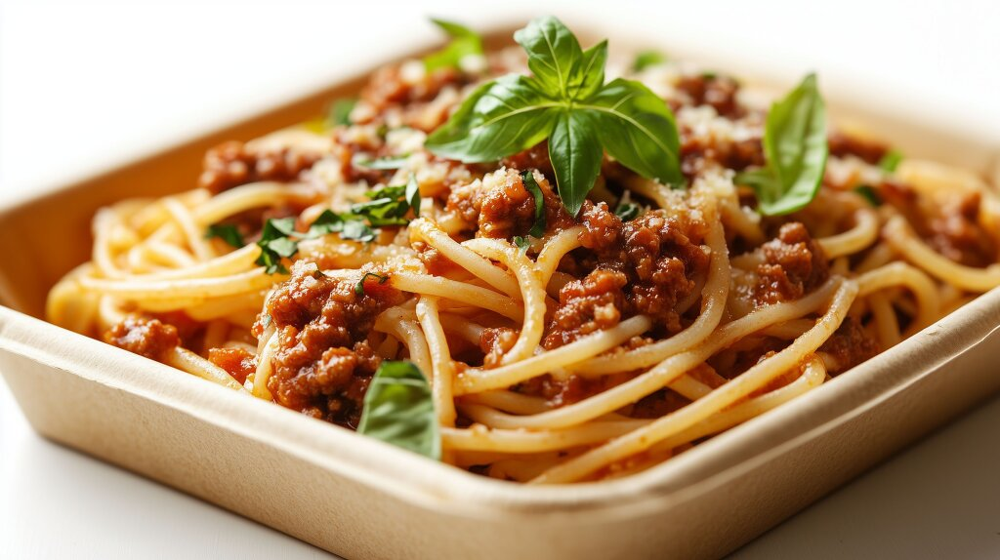

Spaghetti Bolognese

Descrizione
E un buon pasto che mi piace molto da mangiare,
vorrei dire il mio preferito, fatto da spaghetti, e da un sugo fatto da carne macinata.
Ingredienti
- olio
- carne macinata
- passata di pomodoro
- salsa bolognese in polvere
- acqua
Istruzioni
- Versare un cucchiaino di olio nella pentola, quindi mettere la quantità desiderata di carne macinata nella pentola.
- Lasciare cuocere bene la carne prima di aggiungere la passata di pomodoro, regolandosi in base alla quantità di carne in cottura.
- Poi aggiungere l'acqua e la polvere di bolognese, mescolare e lasciar cuocere per qualche minuto, finire e servire.
HOME